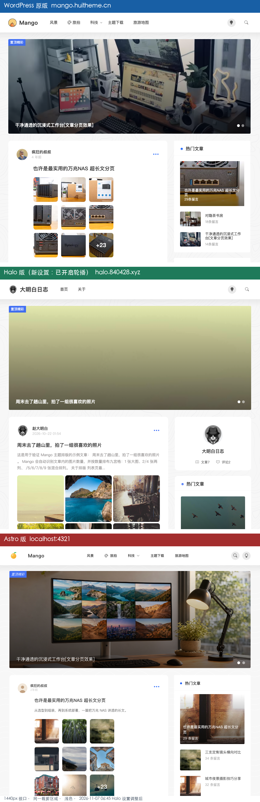

Halo 设置调整后 · 重新对比（原版 / Halo / Astro）
触发：2026-11-07 06:43「halo改了一下设置，重新对比」 三个对象：WordPress 原版
mango.huitheme.cn/ Halo 新设置halo.840428.xyz/ Astro v6localhost:4321新对照图：对比-三方-Halo新设置-原版vsHalo-vsAstro.png（940×2892，同一 1440px 视口、同一box=(250,0,1190,900)裁切、均浅色） 抓取时间：2026-11-07 06:45 阅读方式：HTML 版右上角可切「日间 / 夜间 / 系统」，选择会被记住；未做过手动选择时可用?theme=dark直接以夜间打开。Markdown 版无切换。 主报告：三方差异-原版vs-Halo-vs-Astro.md/.html（已加过时提示，涉及轮播的旧描述保留作历史记录）

上 WordPress 原版 / 中 Halo 新设置 / 下 Astro v6。对照图为三站浅色模式实拍，不随报告主题变化。
1. 一句话结论
这次只动了「后台开关 + 置顶内容」，一行 CSS 都没改。 最大变化是 Halo 首页把轮播打开了，因此「有无轮播」这一项三方首次对齐；其余定制差异（0 缩进、绝对时间、满宽九宫格、作者卡、两项导航等）全部保持原样。
| 旧 Halo（06:10 前） | 新 Halo（06:45） | |
|---|---|---|
| 首页轮播 | 无 | 有：index_banner + #banner，2 条「置顶精彩」 |
| CSS 文件 | style.css 31,549 B / mango.css 20,839 B |
SHA256 与旧版完全一致 |
| 文章排序 | 「定投日志26-12-26」排第 1 | 「周末去了趟山里」「新入手的机械键盘」两篇置顶排前 2 |
| 其余 17 项视觉 | 见主报告第 3 节 | 不变 |
判断：Halo 主题把首页轮播做成「后台设置 / 置顶文章」驱动，
mango.css:47-56与style.css:161的#banner规则从一开始就存在，旧版只是模板没输出。这正好验证了上一版报告「CSS 还在、模板不输出」的推断。
2. 到底改了什么（逐条证据）
| 证据项 | 旧 Halo | 新 Halo | 判断 |
|---|---|---|---|
| 首页 HTML 字节 | 44,970 B | 46,910 B | 多了约 1.9 KB 轮播 DOM |
id="banner" |
0 | 1 | 轮播容器已输出 |
carousel / carousel-item |
0 / 0 | 8 / 2 | 含指示器、左右箭头、2 张 slide |
<section class="index_banner"> |
无 | 有 | 整块轮播 section 新增 |
style.css SHA256 |
e20f0079d1ae…（31,549 B） |
同一值 | 未改 |
mango.css SHA256 |
ea71fc150376…（20,839 B） |
同一值 | 未改 |
| CSS 版本号 | 20261023a / 20261025n |
同左 | 未重新发布主题 |
| 主色 / 版心 / 背景 | #4270f6 / min(900px,…) / bg.svg |
同左 | 主题设置未动 |
| 文章卡片数 | 7 | 7 | 没增删文章 |
| 卡片顺序 | 定投日志(10-26) → 山里(10-22) → 键盘(10-19)… | 山里(10-22) → 键盘(10-19) → 定投日志(10-26)… | 两篇置顶提升，非时间倒序 |
| 热门文章副行首条 | 2026-10-26 |
2026-10-22 |
随置顶/热度变化 |
| 导航 / 作者卡 / 绝对时间 / 相对时间 / 「N条留言」 | 2 项 / 1 个 / 7 处 / 0 / 0 | 完全相同 | 定制层未动 |
新轮播内容（来自 /tmp/halo-home-v2.html）：
| # | 链接 | 标题 | 图片 URL | 角标 |
|---|---|---|---|---|
| 1 | /archives/weekend-mountain-9 |
周末去了趟山里，拍了一组很喜欢的照片 | https://picsum.photos/seed/mountain1/800/800 |
置顶精彩 |
| 2 | /archives/new-keyboard-3 |
新入手的机械键盘，打字手感真不错 | https://movie.douban.com/subject/36680492/ |
置顶精彩 |
结构（指示器 2 个、carousel-control-prev/next、banlist > img + h2 + i）与 WordPress 原版 mango-demo.html:117-137、Astro Banner.astro 一致，形态上已经对齐。
3. 新旧 Halo 逐项对比
| 部位 | 旧 Halo | 新 Halo | 是否变了 |
|---|---|---|---|
| 轮播 banner | 无 | 2 条置顶精彩 + 指示器 + 左右箭头 | 变了 |
| 轮播图片素材 | — | 外链 picsum + 豆瓣网页 URL | 新增，且有问题（见第 5 节） |
| 置顶文章排序 | 定投日志第 1 | 山里 / 键盘前 2 | 变了 |
| 卡片 60px 缩进 | 0 | 0 | 未变 |
| 时间格式 | 绝对 2026-10-26 11:11 |
绝对 | 未变 |
| 摘要 | 13.5px 灰色 3 行截断 | 同左 | 未变 |
| 九宫格 | 100% 3 列 grid / gap 5px | 同左 | 未变 |
| 导航 | 首页 / 关于 | 同左 | 未变 |
| 顶栏 logo | 猫咪 + 大明白日志 | 同左 | 未变 |
| 侧栏第一块 | 作者卡 author_show_box |
同左 | 未变 |
| 热门文章副行 | 日期 | 日期（首条换成 10-22） | 仅数据变 |
| 底部三数 | 数据库实时 | 同左 | 未变 |
| 背景水波纹 | 明显 | 同左 | 未变 |
| 暗色 | isDarkMode 跟随系统 |
同左 | 未变 |
结论：18 项里只有 3 项变化，且都是「轮播 + 内容排序」，视觉定制层零改动。
4. 更新后的三方矩阵
| 项目 | WordPress 原版 | Halo 新设置 | Astro v6 | 现在是否对齐 |
|---|---|---|---|---|
| 首页轮播（形态） | 有，2 条 + 角标 + 指示器 + 箭头 | 有，2 条 + 角标 + 指示器 + 箭头 | 有，2 条 + 角标 + 指示器 + 箭头 | 已对齐 |
| 轮播图片 | 本地 900×350 工作台横图 | 外链 800×800 方图 + 一个 HTML 网页 | 本地横图 | 未对齐（素材问题） |
| 卡片缩进 | 60px | 0 | 60px | 未对齐（Halo 定制） |
| 九宫格 | 66% 方形 + +23 |
100% 3 列 grid / 矩形 | 66% 方形 + +23 |
未对齐 |
| 时间 | 相对「4 年前」 | 绝对 2026-10-22 01:54 |
相对 | 未对齐 |
| 摘要 | 14px / 300 / 1.8 不截断 | 13.5px 灰 / 3 行截断 | 原版式 | 未对齐 |
| 导航 | 8 项分类 | 2 项 | 5 项分类 | 未对齐 |
| 侧栏第一块 | 热门文章 | 作者卡 | 热门文章 | 未对齐 |
| 热门副行 | 29条留言 |
日期 | 29 条留言 |
未对齐 |
| logo | 芒果 + Mango | 猫咪 + 大明白日志 | 芒果 + Mango | 未对齐 |
| 底部三数 | 演示值 | 数据库实时 | frontmatter 静态 | 形态一致、数据源不同 |
换句话说：原来最刺眼的「Halo 没有轮播」已经消失，但三联图里中段与上/下两段依然一眼可分，原因是缩进、九宫格、时间、摘要、导航、作者卡这 6 项定制仍在。
5. 新发现的两个素材问题（建议优先修）
5.1 第一张图没坏，是被裁没了
https://picsum.photos/seed/mountain1/800/800 实测 GET 200 / image/jpeg / 17,200 B / 800×800，图片本身是黄绿色调的雾景（大片浅黄绿天空 + 下方海面与建筑）。但 mango.css:48-53 给轮播图设了：
#banner .banlist img { width: 100%; aspect-ratio: 900 / 350; object-fit: cover; display: block; }
800×800 方图被压成 900×350 后只剩中间一条天空，三联图里看起来像一块「没加载的黄绿渐变」。
注意：用
curl -I（HEAD）查这个 URL 会返回 405，不能据此判断图片不可用；必须看 GET。
修法：在 Halo 后台把封面换成 900×350 或 16:9 的横图（最好传到媒体库用本地 URL），裁切后才有主体内容。
5.2 第二张填的是网页，不是图片
https://movie.douban.com/subject/36680492/ 实测 GET 200 / text/html / 2,965 B（HEAD 是 403），返回的是 HTML 文档。轮播切到第二张时 <img> 必然加载失败裂图。这应该是把豆瓣条目链接误填进了封面字段。
修法：把该文章的封面改成真实图片 URL；若想保留豆瓣卡片效果，用 plugin-douban 在正文里渲染，而不是当 <img src>。
这两个都是内容数据问题，不是 Mango 主题或 Halo 移植的实现缺陷；原版与 Astro 用的都是本地横图，所以形态一致、观感不同。
6. 剩余差距：哪些后台能改，哪些必须动 CSS
| 差距 | 后台设置能否解决 | 具体位置 / 做法 |
|---|---|---|
| 轮播已开 | 已完成 | 后台「首页轮播 / 置顶文章」 |
| 轮播图裁切与裂图 | 能（改文章封面） | 换 900×350 横图，见第 5 节 |
| 导航只有 2 项 | 能 | Halo 后台菜单补齐分类项 |
| logo / 站点名 | 能 | 主题设置 |
| 60px 缩进 | 不能 | mango.css:870-872 的 .post_loop .post_loop_conter{margin-left:0} |
| 九宫格满宽 grid | 不能 | mango.css:765-795，覆盖前段 :59-93 |
| 摘要 3 行灰字 | 不能 | mango.css:881-890，覆盖前段 :758-763 |
| 绝对时间 / 热门副行日期 | 不能 | Thymeleaf 模板层 |
| 侧栏作者卡 | 不能 | 模板层 + :457 .author_show_box |
| 实时评论 / 浏览 | — | 这是 Halo 的优势，不建议改 |
7. 如果想让 Halo 继续贴近原版（按优先级）
- 先修两张轮播图（立刻消除渐变块与裂图，收益最大且不动代码）；
- 删掉或改回
mango.css:870-872的margin-left:0→ 恢复 60px 缩进； :765-795九宫格改回width:66%+ 正方形裁切 ++N叠加；:881-890摘要恢复 14px / 300 / 1.8、不截断；- 模板里时间切相对时间、热门文章副行切「N 条留言」；
- 后台菜单补齐「风景 / 旅拍 / 科技 / 主题下载 / 旅游地图」；
- 首页侧栏取消作者卡，或移到关于页；
- logo 与背景波纹强度按需调整。
提醒：第 2–8 步做完，Halo 站就会变成「原版演示站」而不是「大明白日志」。建议先只做第 1 步，再决定要不要回退定制风格；主报告方向 D「各司其职」依然成立。
8. 数据来源与自洽校验
| 结论 | 依据 |
|---|---|
| 新 Halo HTML | curl -sSL https://halo.840428.xyz/ → /tmp/halo-home-v2.html（46,910 B），06:45 抓取 |
| 新 Halo CSS | /tmp/halo-style-v2.css 31,549 B、/tmp/halo-mango-v2.css 20,839 B，与旧版 SHA256 逐字节相同 |
| 旧基线 | /tmp/halo-home.html 44,970 B、/tmp/halo-style.css、/tmp/halo-mango.css |
| 轮播 DOM | 新 HTML 的 <section class="index_banner"> 区块：carousel-item 2 个、banlist 2 个、置顶精彩 2 个、prev/next 各 1 |
| 图片 URL 实测 | picsum GET 200 image/jpeg 800×800（HEAD 405）；豆瓣 URL GET 200 text/html 2,965 B（HEAD 403） |
| 新截图 | /tmp/halo-light-top-v2.png，CDP 设 isDarkMode="0" + reload，状态回读 html.className="" \| isDarkMode=0，1440×1000 |
| 对照图 | 对比-三方-Halo新设置-原版vsHalo-vsAstro.png（940×2892），与旧 对比-三方-原版vs-Halo-vs-Astro.png 同视口同裁切 |
| 旧报告 | 三方差异-原版vs-Halo-vs-Astro.md/.html、Halo站-vs-Astro复刻-对比分析.md |
五条自洽校验：
- 同一把尺子：新 Halo 截图仍用 1440×1000 视口、
box=(250,0,1190,900)裁切，且强制浅色（CDP 回读html.className=""），避免把系统暗色误判成设置变化。 - 「只改设置」是双证据：HTML 新增轮播 DOM + 两个 CSS 文件 SHA256 完全一致 + CSS 版本号未变，排除「改了样式」的可能。
- 计数口径：
id="banner"0→1、carousel0→8，但post_loop仍 7、作者卡仍 1、绝对时间仍 7、相对时间仍 0 → 变化范围被限定在轮播与排序。 - 图片结论看 GET 不看 HEAD：picsum 的 HEAD 返回 405 容易误判「图片挂了」，实际 GET 是正常 JPEG；豆瓣 URL 则确实是
text/html。两者分开处理。 - 主报告同步：主报告已加「Halo 无轮播结论已过时」提示，并更新矩阵第 1 / 17 行、4.4 节、第 7 节 B 类、第 10 节结论，避免两份报告互相矛盾。
9. 结论
- 对齐了 1 项：首页轮播（形态、条数、角标、指示器、箭头都与原版/Astro 一致）。
- 没动的 17 项：缩进、九宫格、时间、摘要、导航、作者卡、副行文案等定制全部保留。
- 新增 2 个待修素材问题：800×800 方图被裁成「渐变块」、豆瓣网页被当成图片会裂图。
- 建议顺序：先换两张 900×350 横图 → 再决定是否回退
mango.css定制 → 维持「Halo 当主博客、Astro 当复刻样板」。
（本页沿用主报告的日夜切换模板：右上角「日间 / 夜间 / 系统」，?theme=dark 可直开夜间，打印强制浅色，对照截图固定白底不随主题变化。）